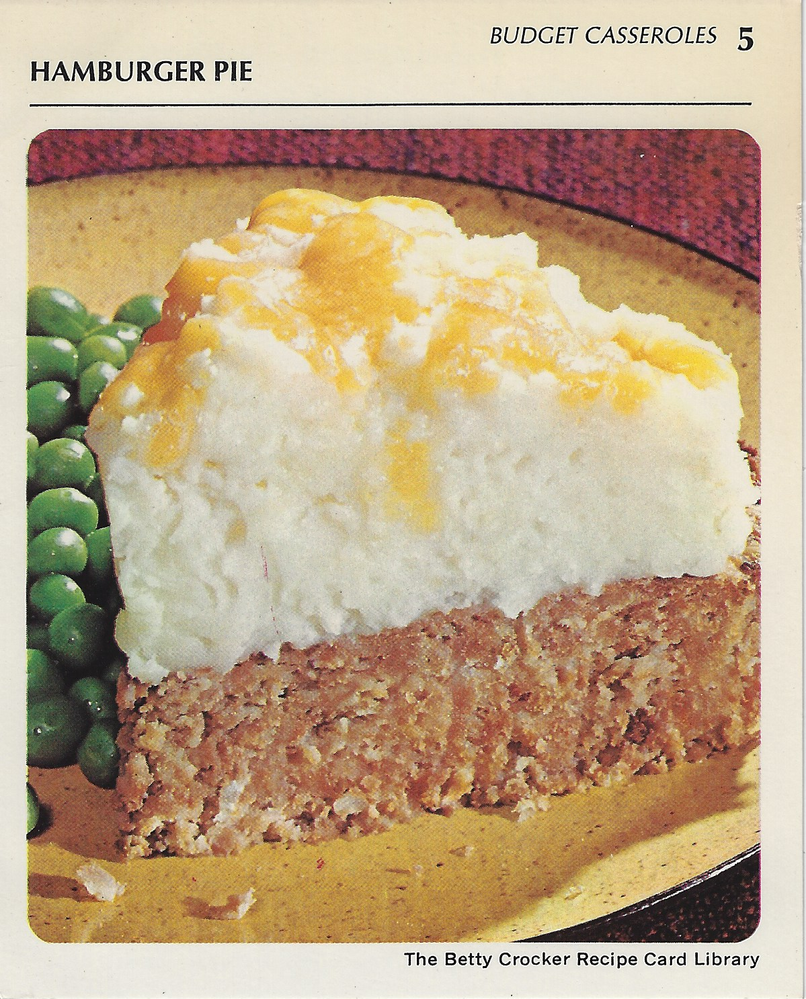

Back to Table of Content
Hamburger Pie

Ingredients
- 1 pound ground beef
- Potato Buds instant puffs (enough for 8 servings)
- 1 egg
- 1teaspoon salt
- 1/8 teaspoon pepper
- 1 tablespoon instant minced onion
- 3/4 cup catsup
- 1 cup milk
- 1/2 cup shredded sharp Cheddar cheese (2 ounces)
Preparation
- Heat oven to 350°. Mix meat, 1 1/3 cups of the instant puffs (dry), the
egg, salt, pepper, onion,
catsup and milk. Spread in ungreased pie pan, 9×1 1/2 inches. Bake
uncovered 35 to 40 minutes.
- Prepare remaining instant puffs as directed on package for 4 servings. Top baked
meat loaf with mashed potatoes; sprinkle with cheese.
Bake 3 to 4 minutes longer or until cheese melts. 4 or 5 servings.
STORE, Freezing, and Thawing Uncooked Ground Beef
loosely covered, in coldest part of the refrigerator up to 24 hours (if you are planning to use the
ground beef within 24 hours of purchasing).
FREEZE for longer storage. Wrap one-pound packs or individual patties in freezer wrap, separating patties with
double layer of freezer wrap. Label with date. Store no longer than 4 months.
THAW wrapped 5 to 8 hours in refrigerator or cook patties frozen.